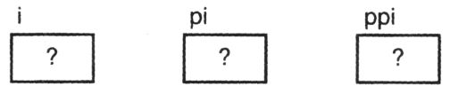
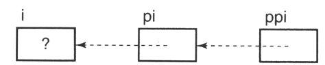
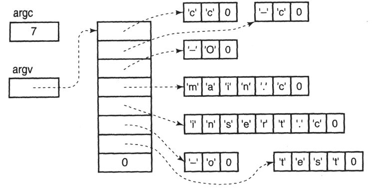
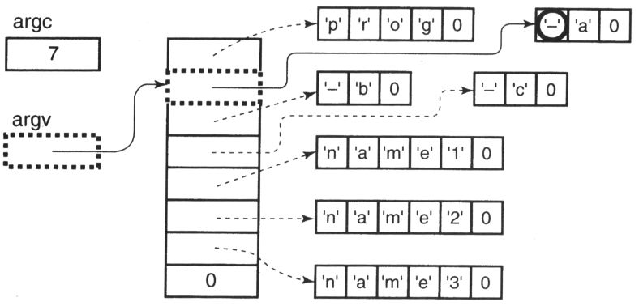
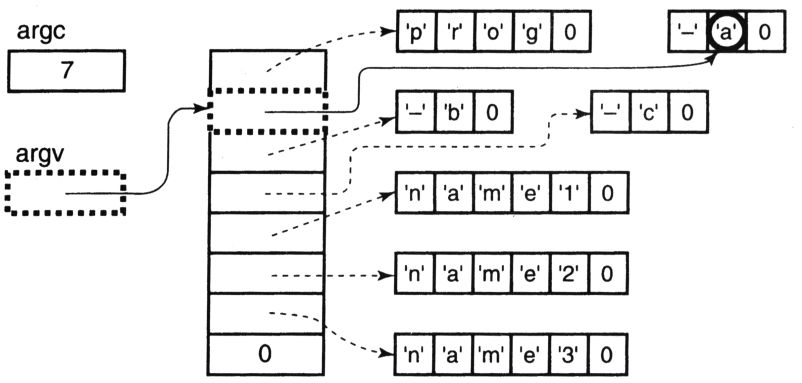
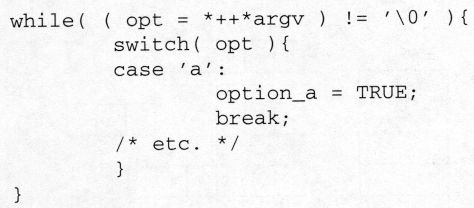
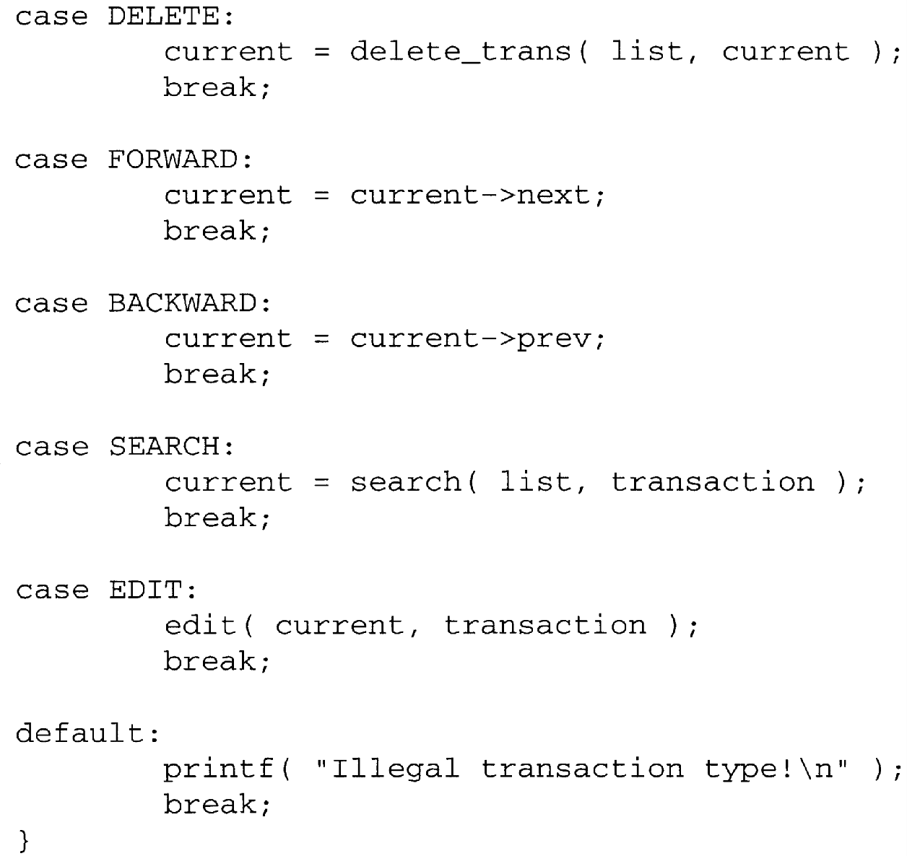

Chapter 13 Advanced Pointers Topics
This chapter is a collection of various techniques involving pointers. Some of them are very useful, others are of more academic interest, and a few are just fun, but all are good illustrations of various principles in the language.
13.1 More Pointers to Pointers
We used pointers to pointers in the last chapter to simplify the function that inserts a new value into a singly linked list. There are many other areas where having a pointer to a pointer is also valuable.
Here is a general example.
These declarations create the following variables in memory. If these are automatic variables, we cannot make any assumptions about their initial values.

Given this information, what is the effect of each of these statements?
① If ppi is an automatic variable, it is uninitialized and a random value is printed. If it is a static variable, zero is printed.
② This statement prints, as a decimal integer, the address where ppi is stored. This value is not very useful.
③ The result of this statement is unpredictable. Indirection should not be performed on ppi because it is not yet initialized.
The next two statements are more useful.
ppi = πThis statement initializes ppi to point to the variable pi. We can now safely apply indirection to ppi.
*ppi = &i;This statement initializes pi (which is accessed indirectly through ppi) to point to i. After these last two statements, the variables look like this:

Now, each of the following statements has the same effect:
i='a';
*pi='a';
**ppi='a';Why would anyone ever use the more complicated versions with indirection if a simple assignment to i does the job? Because the simple assignment is not always possible, such as in the linked list insertion. We could not use a simple assignment in that function because the variable name was not known within the scope of the function. All the function had was a pointer to the location that needed to be changed, so indirection was used on the pointer to access the desired variable.
In the previous example, the variable i is an integer, and pi is a pointer to an integer. But ppi is pointing at pi, so it is a pointer to a pointer to an integer. Suppose we wanted another variable, one that would point to ppi. Its type, of course, would be "pointer to a pointer to a pointer to an integer," and it would be declared in this way:
int ***pppi;The more levels of indirection, the less often you will need to use it. But once you truly understand indirection, it is easy to apply as many levels of indirection as you need for any situation.
TIP
Use only as many levels of indirection as you really need. Otherwise, your programs will end up being larger, slower, and harder to maintain.
13.2 Advanced Declarations
Before using more advanced pointer types, we must see how they are declared. Earlier chapters introduced the idea of a declaration expression and how variables in C are declared by inference. We saw some examples of declaration by inference when we declared pointers to arrays in Chapter 8. Let's explore this topic by looking at a sequence of increasingly complex declarations.
We'll start with some easy ones.
int f; /* an integer */
int *f; /* a pointer to an integer */Remember how the second declaration works, though; it declares the expression *f to be an integer. From this fact you must deduce that f is a pointer to an integer. This interpretation of C declarations is validated by the declaration
int* f, g;which does not declare two pointers. Despite the spacing, the star is associated with f, and only f is a pointer, g is an ordinary integer.
Here is another one you have seen before:
int f();It declares f to be a function that returns an integer. The old-style declaration says nothing about the function's parameters. It only declares the type of value that f will return. I will use this style for now to keep the examples simpler and return to full prototypes later.
Here's a new one:
int *f();To figure this one out, you must determine how the expression *f() is evaluated. The function call operator () goes first because its precedence is higher than that of indirection, so f is a function that returns a pointer to an integer.
If "declaration by inference" seems like a nuisance, consider that the expressions used for declaring variables are evaluated with the same rules used for ordinary expressions. You don't need to learn a separate syntax for declarations. If you can evaluate complex expressions, you can also figure out complex declarations because they work the same way.
The next declaration is more interesting.
int (*f)();Figuring out what the parentheses mean is an important step in deciphering this declaration. There are two sets of parentheses, and each has a different meaning. The second set of parentheses is the function call operator, but the first set is used only for grouping. It forces the indirection to be applied before the function call, making f a pointer to a function that returns an integer.
A pointer to a function? Yes, each function in a program begins at some address in memory, so it is possible for a variable to point to that location. The initialization and use of pointers to functions is covered later in this chapter.
The next declaration should now be easy:
int *(*f)();It is the same as the previous example except that in order to get an integer, indirection is applied to the value returned by the function. Here f is a pointer to a function that returns a pointer to an integer.
Now let's consider arrays, too.
int f[];indicates that f is an array of integers. The size has been omitted for now because we're not concerned with the array's size, only its type [1] .
How about this one?
int *f[];Again, there are two operators. The subscript has the higher precedence, so f is now an array of pointers to integers.
The next example is a trick question, but try to figure it out anyway.
int f()[];f appears to be a function that returns an array of integers. The trick is that it is illegal—functions can only return scalars, not arrays.
Here is another one that will require some thought:
int f[]();Now f appears to be an array of functions that return integers. This declaration is also illegal because array elements must all be the same size, but it is quite reasonable for different functions to be different sizes.
The next declaration is legal, though:
int (*f[])();You must first find all of the operators and then apply them in the correct order. Once again, there are two sets of parentheses with different meanings. The parenthesized expression *f[] is evaluated first, so f is an array of pointers to something. The trailing () is the function call operator, so f must be an array of pointers to functions that return integers.
If you got that last one right, then this one should be easy:
int *(*f[])();The only change is one final indirection, so this declaration creates an array of pointers to functions that return pointers to integers.
Up to now, I've used old-style declarations to keep the examples simple. But ANSI C lets us use full function prototypes to make the declaration more specific. For example:
int (*f)( int, float );
int *(*g[])( int, float );declares f to be a pointer to a function that takes two arguments, an integer and a float, and returns an integer. g is an array of pointers to functions that take two arguments, an integer and a float and return a pointer to an integer. Despite the increased complexity in the declaration, the prototype form is greatly preferred because of the additional information it gives the compiler.
TIP
If you have a UNIX system and have access to the Internet, you can get cdec1, a program that converts between C declarations and English. It can explain an existing C declaration:
or give you the syntax for a declaration:
The source code for cdec1 can be found in Volume 14 of the archives for the comp.sources.unix newsgroup.
13.3 Pointers to Functions
You will not use pointers to functions every day. However, they have their uses, and the two most common are jump tables and passing a function pointer as an argument in a function call. We'll explore both of these techniques this section. First, though, it is important to point out a common error.
CAUTION!
Simply declaring a pointer to a function does not make it usable. Like any other pointer, a pointer to a function must be initialized to point to something before indirection can be performed on it. The following code fragment illustrates one way to initialize a pointer to a function.
int f( int );
int (*pf)( int ) = &f;The second declaration creates pf, a pointer to a function, and initializes it to point to the function f. The initialization can also be accomplished with an assignment statement. It is important to have a prototype for f prior to the initialization, for without it the compiler would be unable to check whether the type of f agreed with that of pf.
The ampersand in the initialization is optional, because the compiler always converts function names to function pointers wherever they are used. The ampersand does explicitly what the compiler would have done implicitly anyway.
After the pointer has been declared and initialized, there are three ways to call the function:
The first statement simply calls the function f by name, though its evaluation is probably not what you expected. The function name f is first converted to a pointer to the function; the pointer specifies where the function is located. The function call operator then invokes the function by executing the code beginning at this address.
The second statement applies indirection to pf, which converts the function pointer to a function name. This conversion is not really necessary, because the compiler converts it back to a pointer before applying the function call operator. Nevertheless, this statement has exactly the same effect as the first one.
The third statement has the same effect as the first two. Indirection is not needed, because the compiler wants a pointer to the function anyway. This example shows how function pointers are usually used.
When would anyone ever want to use a pointer to a function? As mentioned earlier, the two most common uses of pointers to functions are passing a function pointer as an argument in a function call and jump tables. Let's look at an application of each.
13.3.1 Callback Functions
Here is a simple function that locates a value in a singly linked list. Its arguments are a pointer to the first node in the list and the value to locate.
This function looks simple enough, but it works only with linked lists whose values are integers. If you also had a linked list of strings, you would need to write a different function, identical in every respect to this one except for the type of the parameter value and the manner in which the node values are compared.
A more general approach is to make the searching function typeless so that it will work on lists with values of any type. We must revise two aspects of the function to make it typeless. First, we must change how the comparison is performed so that the function can compare values of any type. This goal sounds impossible. If you write statements to compare integer values, how can they possibly work with other types such as strings? The solution uses a pointer to a function. The caller writes a function to compare two values and passes a pointer to it as an argument to the search function. The search function then calls the comparison function to make comparisons. In this way, values of any type may be compared.
The second aspect we must change is to pass a pointer to the value rather than the value. The function will receive this argument in a void* parameter. The pointer to the value is then passed to the comparison function. This change also enables string and array objects to be used. String and arrays cannot be passed as arguments, but pointers to them can.
Functions used in this manner are callback functions because the user passes a pointer to a function to some other routine, which then "calls back" to the user's function. You can use the technique any time you are writing a function that must be able to perform different types of work at a given point or perform work that can be defined only by the function's caller. Many windowing systems use callback functions to connect actions, such as dragging the mouse and clicking buttons, to specific functions in the user's program.
We cannot write an accurate prototype for the callback function in this context because we don't know what type of values are being compared. Indeed, we want the search function to work with any type of value. The solution to this dilemma is to declare the arguments as void *, which means "a pointer to something whose type we do not know."
TIP
Before using the pointers in the comparison function, they must be cast to the correct type. Because a cast circumvents the usual type checking, be extremely careful that the function is called with the proper type of arguments.
In this case, the callback function compares two values. The search function passes pointers to the two values to be compared and checks the returned value; for example, zero for equal values and nonzero for unequal values. The search function is now typeless because it doesn't perform the actual comparison. It is true that the caller must now write the necessary comparison function, but doing so is easy because the caller knows what type of values are contained in the list. And if several lists with different types of values are used, writing one comparison function for each type allows a single search function to operate on all of the lists.
Program 13.1 is an implementation of a typeless search function. Note that the third parameter to the function is a pointer to a function. The full prototype is used to declare this parameter. Note also that the parameter node is not declared const even though the function never modifies any of the nodes to which it points. If node were declared const the function would have to return a const result, which would restrict the caller from modifying the node that was located.
/*
** Function to search a linked list for a specific value. Arguments
** are a pointer to the first node in the list, a pointer to the
** value we're looking for, and a pointer to a function that compares
** values of the type stored on the list.
*/
#include <stdio.h>
#include "node.h"
Node *
search_list( Node *node, void const *value,
int (*compare)( void const *, void const * ) )
{
while( node != NULL ){
if( compare( &node->value, value ) == 0 )
break;
node = node->link;
}
return node;
}Program 13.1 Typeless linked list search
search.c
Pointers to the value argument and &node->value are passed to the comparison function. The latter is the value in the node we are currently examining. I chose the counter-intuitive convention of having the comparison function return zero for equal operands in order to be compatible with the specification for comparison functions used by several functions in the standard library. In this specification, unequal operands are reported more explicitly—a negative value indicates that the first argument was less than the second, and a positive value indicates that it was greater.
To search a particular linked list, the user would write the appropriate comparison function and pass pointers to it and to the desired value. For example, here is a comparison function for searching a list of integers.
The function would be used like this:
desired_node = search_list( root, &desired_value,
compare_ints );Note the casts: The arguments to the comparison function must be declared void * to match the prototype of the search function; they are then cast to int * in order to compare the values as integers.
If you wish to search a list of strings, this code will do the job:
It happens that the library function strcmp does exactly the comparison we need, though some compilers will issue warnings because its arguments are declared char * rather than void *.
13.3.2 Jump Tables
Jump tables are best explained with an example. The following code fragment is from a program that implements a pocket calculator. Other parts of the program have already read in two numbers (op1 and op2) and an operator (oper). This code tests the operator to determine which function to invoke.
For a fancy calculator with a hundred or so operators, this switch statement will become extremely large.
Why are functions being called to perform these operations? It is good design to separate the operations from the code that chooses among them. The more complex operations will certainly be implemented as separate functions because of their size, but even the simple operations may have side effects, such as saving a constant value for later operations.
In order to use a switch, the codes that represent the operators must be integers. If they are consecutive integers starting with zero, we can use a jump table to accomplish the same thing. A jump table is just an array of pointers to functions.
There are two steps in creating a jump table. First, an array of pointers to functions is declared and initialized. The only trick is to make sure that the prototypes for the functions appear before the array declaration.
The proper order for the functions' names in the initializer list is determined by the integer codes used to represent each operator in the program. This example assumes that ADD is zero, SUB is one, MUL is two, and so forth.
The second step is to replace the entire switch statement with this one!
result = oper_func[ oper ]( op1, op2 );oper selects the correct pointer from the array, and the function call operator executes it.
CAUTION!
An out-of-bounds subscript is just as illegal on a jump table as it is on any other array, but it is much more difficult to diagnose. There are three places where the program might terminate when this error occurs. First, if the subscript value is far enough out of bounds, the location that it identifies might be outside of the memory allocated to the program. Some operating systems detect this error and abort the program, but others do not. If the program is terminated, the fault will be reported near the jump table statement, making the problem fairly easy to diagnosis.
If the program does not abort, the value identified by the illegal subscript is fetched, and the processor jumps to that location. This unpredictable value may or may not represent a valid address for the program. If it does not the program may also abort, but the address reported for the fault is essentially a random number, making debugging more difficult.
If the program hasn't failed yet, the machine will begin to execute instructions at the bogus address obtained with the illegal subscript, and debugging the error becomes much harder. If the random address is in an area in memory that contains data, the program usually aborts very quickly due to an illegal instruction or an illegal operand address (although data values sometimes represent valid instructions, they do not often make any sense). The only clue to how the computer got where it did is the return address stored on the stack by the function call made in the jump table. If any of the random instructions modified the stack or changed the stack pointer when they were executed, this clue is lost.
Worse still is if the random address happens to be in the middle of a function. Then the function executes merrily along, changing who knows what data, until it is finished. But the return address isn't where the function expects it to be on the stack, so another random value is used instead. This value becomes the address of the next instruction to execute, and the computer goes to a different random location and continues to execute whatever it finds there.
The problem is that the instructions destroy the last clue as to how the computer got to where the fault finally occurs. Without this information, it is difficult to pinpoint the source of the problem. If you are suspicious of a jump table, then print a message before and after its function call. It will then be obvious if the called function never returns. The trick is to realize that a fault in one part of the program might be caused by an error in a jump table in some distant, unrelated part of the program.
TIP
It is much easier to make sure that the subscript used in a jump table is within range in the first place. In the calculator example, the function that reads in the operator and converts it to its corresponding integer should verify that the operator is valid.
13.4 Command Line Arguments
Processing command line arguments is another application of pointers to pointers. Some operating systems, including UNIX and MS-DOS, let the user write arguments on the command that initiates the execution of a program. These arguments are passed to the program, which can process them in any way it sees fit.
13.4.1 Passing Command Line Arguments
How are these arguments passed to the program? The main function of a C program has two parameters [2] . The first, often called argc, is a count of the number of arguments in the command line. The second, often called argv, points to the values of the arguments. Because there isn't an inherent limit on the number of arguments, argv points to the first element of what is essentially an array. Each of these elements is a pointer to the text of one argument. If the program needs to access the command line arguments, the main function is declared with these parameters:
int
main( int argc, char **argv )Note that the names argc and argv are frequently used but are not magical in any way. They could be called "fred" and "ginger" if you so desired, though the program would be harder to read.
Figure 13.1 shows how the arguments in this command line would be passed:
$ cc –c –o main.c insert.c –o test
Figura 13.1 Parámetros de la línea de comandos
Note the array of pointers: Each element of this array is a pointer to a character, and the array is terminated by a NULL pointer. The value in argc and this NULL may both be used to determine how many arguments were passed, argv points to the first element of this array, which is why it is declared as a pointer to a pointer to a character.
One last thing to observe is that the very first argument is the name of the program. What is the purpose of passing the program name as an argument? Surely the program knows what it is. Usually this argument is ignored, but it can be useful for programs that are commonly invoked with different sets of options. The UNIX ls command, which lists the files in a directory, is such a program. On many UNIX systems, the command has several different names. When invoked with the name ls, it produces a brief listing of files. When invoked with the name l, it produces a multicolumn brief listing, and the name l1 produces a detailed listing. The program examines the first argument to determine which name was used to invoke it and selects options based on the name.
On some systems, the argument strings are stored one right after the other, so advancing a pointer to the first argument past the end of the string will take you to the beginning of the next one. This arrangement is implementation dependent, though, so you must not depend upon it. To find the beginning of an argument, use the appropriate pointer from the array.
How does a program access these arguments? Program 13.2 is a very simple example—it simply prints out all of its arguments (except for the program name) much like the UNIX echo command.
/*
** A program to print its command line arguments.
*/
#include <stdio.h>
#include <stdlib.h>
int
main( int argc, char **argv )
{
/*
** Print arguments until a NULL pointer is reached (argc is
** not used). The program name is skipped.
*/
while( *++argv != NULL )
printf( "%s\n", *argv );
return EXIT_SUCCESS;
}Porgram 13.2 Print command line arguments
echo.c
The while loop increments argv and then checks *argv to see if the end of the argument list has been reached. It is looking for the NULL that terminates the list. If there is another argument, the body of the loop is executed and prints it. By incrementing argv first in the loop, the program name is automatically skipped.
The %s code used in the format string of printf requires an argument that is a pointer to character. printf assumes that this character is the first of NUL-terminated string. Applying indirection on argv yields the value to which it points, a pointer to a character – just what the format requires.
13.4.2 Processing Command Line Arguments
Let's write a program that processes command line arguments more realistically. This program will handle a very common paradigm—option arguments followed by file name arguments. After the program name, there may be zero or more options, followed by zero or more file names, like this:
prog –a –b –c name1 name2 name3Each option argument is a dash followed by a single letter that identifies which of several possible options is desired. Each file name argument is processed in some way. If there are no file names, the standard input is processed instead.
To make these examples generic, our program sets variables to remember which options were found. Other parts of a real program might then test these variables to determine what processing was requested. In a real program, the processing required for an option might also be done when the option is discovered in the arguments.
Program 13.3 resembles Program 13.2 because it contains a loop that goes through all of the arguments. The main difference is that we must now distinguish between option arguments and tile name arguments. The loop stops when it reaches an argument that does not begin with a dash. A second loop processes the file names.
/*
** Process command-line arguments
*/
#include <stdio.h>
#define TRUE 1
/*
** Prototypes for functions that do the real work.。
*/
void process_standard_input( void );
void process_file( char *file_name );
/*
** Option flags, default initialization is FALSE.。
*/
int option_a, option_b /* etc. */ ;
void
main( int argc, char **argv )
{
/*
** Process option arguments: skip to next argument, and
** check that it begins with a dash.
*/
while( *++argv != NULL && **argv == '-' ){
/*
** Check the letter after the dash.
*/
switch( *++*argv ){
case 'a':
option_a = TRUE;
break;
case 'b':
option_b = TRUE;
break;
/* etc. */
}
}
/*
** Process file name arguments
*/
if( *argv == NULL )
process_standard_input();
else {
do {
process_file( *argv );
} while( *++argv != NULL );
}
}Program 13.3 Processing command line arguments
cmd_line.c
Notice the test that was added to the while loop in Program 13.3:
**argv == '-'The double indirection accesses the first character of the argument, as illustrated in Figure 13.2. If this character is not a dash then there aren't any more options and the loop breaks. Note that it is important to test *argv before testing **argv. If *argv were NULL, the second indirection in **argv would be illegal.

Figure 13.2 Accessing the argument
The *++*argv expression in the switch statement is one you have seen before. The first indirection goes to where argv points, and this location is incremented. The last indirection follows the incremented pointer, as diagrammed in Figure 13.3. The switch statement sets a variable depending on which option letter was found, and the ++ in tile while loop advances argv to the next argument for the next iteration of the loop.

Figure 13.3 Accessing the next character in the argument
When there aren't any more options, the file names are handled. If argv is pointing to the null, there aren't any and the standard input is processed. Otherwise, each name is processed one by one. The function calls in this program are generic so they don't show any of the work that a real program might perform. Nevertheless, this design is good. The main program deals with the arguments so that the functions doing the processing don't have to worry about parsing options or looping through file names.
Some programs allow the user to put multiple option letters in one argument, like this:
prog –abc name1 name2 name3At first you might think that this change will complicate our program, but it turns out to be fairly easy to process. Each argument may now contain multiple options, so we use another loop to process them. The loop should terminate when it encounters the trailing NUL byte at the end of the argument.
The switch statement in Program 13.3 is replaced by the following code fragment:

The test in the loop advances the argument pointer beyond the dash and makes a copy of the character found there. If this character is not the NUL byte, then the switch statement is used as before to set the appropriate variable. Note that the option character is saved in a local variable opt to avoid having to evaluate **argv in the switch statement.
TIP
Be aware that the command line arguments may only be processed once in this manner because the pointers to the arguments are destroyed by the inner loop. If the arguments must be processed more than once, make a copy of each pointer that you must increment as you go through the list.
There are other possibilities for processing options. For example, the options might be words rather than single letters, or there might be values associated with some options, as in this example:
cc –o prog prog.cOne of the chapter problems expands on this idea.
13.5 String Literals
It is time to take a closer look at a topic mentioned earlier: string literals. When a string literal appears in an expression, its value is a pointer constant. The compiler stores a copy of the specified characters somewhere in memory, and the pointer points to the first of these characters. But when array names are used in expressions, their values are also pointer constants. We can perform subscripting, indirection, and pointer arithmetic on them. Are these operations meaningful on string literals, too? Let's look at some.
What is the meaning of this expression?
"xyz" + 1To most programmers, it looks like gibberish. It appears to be trying to perform some kind of addition on a string. But when you remember that the string literal is a pointer, the meaning becomes clear. This expression computes the sum of the pointer value plus one. The result is a pointer to the second character in the literal: y.
How about this expression?
*"xyz"When indirection is applied to a pointer, the result is the thing to which it points. The type of a string literal is "pointer to character," so the result of the indirection is the character to which it points: x. Note that the result is not the entire string, just the first character.
This next example also looks strange, but by now you should be able to figure out that the value of this expression is the character z.
"xyz" [2]The last example contains an error. The offset of four goes off the end of the string, so the result is an unpredictable character.
*( "xyz" + 4 )When would anyone ever want to use expressions like these? The function in Program 13.4 is one useful example. Can you figure out what this mystery function does? Here is a hint: Trace the function with several different input values and see what is printed. The answer is given at the end of the chapter.
In the meantime, let's look at another example. Program 13.5 contains a function that converts binary values to characters and prints them. You first saw this function as Program 7.6. For this example, we'll modify it to print values in hexadecimal. The first change is easy: just divide by 16 instead of 10. But now the remainder might be any value from 0 to 15, and the values from 10 to 15 should be printed as the letters A to F. The following code is a typical approach to this new problem.
I've used a local variable to save the remainder rather than computing it three separate times. For remainders in the range 0 through 9, a digit is printed the same as before. But the other remainders are printed as letters- The test is needed because the letters A through F do not immediately follow the digits in any common character set.
/*
** Mystery function
**
** The argument is a value in the range 0 through 100.
*/
#include <stdio.h>
void
mystery( int n )
{
n += 5;
n /= 10;
printf( "%s\n", "**********" + 10 - n );
}Program 13.4 Mystery function
mystery.c
/*
** Take an integer value (unsigned), convert it to characters, and
** print it. Leading zeros are suppressed.
*/
#include <stdio.h>
void
binary_to_ascii( unsigned int value )
{
unsigned int quotient;
quotient = value / 10;
if( quotient != 0 )
binary_to_ascii( quotient );
putchar( value % 10 + '0' );
}Program 13.5 Convert a binary integer to characters
btoa.c
The following code solves the problem in a different way.
putchar( "0123456789ABCDEF" [value % 16 ] );Once again the remainder will be a value in the range of 0 through 15, but this time it is used as a subscript to select one of the characters from the string literal to print. The previous code is complicated because the letters and digits are not adjacent in the character set. This solution avoids the complication by defining a string in which they are adjacent. The remainder selects the right digit from this string.
This second approach is faster than the traditional one, because fewer operations are needed. The code may or may not be smaller than the original, however. The decrease in instructions is offset by the addition of the 17-byte string literal.
TIP
However, a large reduction in readability is a big price to pay for a small improvement in execution speed. When you use an unusual technique or statement, be sure that you include a comment describing how it works. Once this example has been explained, it is actually easier to follow than the traditional code because it is shorter.
Now back to the mystery function. Did you figure it out? It prints a number of stars proportional to the value of the argument. It prints 0 stars if the argument was 0, 10 stars if the argument was 100, and an intermediate number of stars for intermediate values. In other words, this function prints one bar of a histogram, and it does it much more easily and efficiently than the more traditional loop.
13.6 Summary
If declared properly, a pointer variable may point to another pointer variable. Like any other pointer variable, a pointer to a pointer must be initialized before it can be used. Two indirection operations are needed on a pointer to a pointer to obtain the target object. More levels of indirection are allowed (for example, a pointer to a pointer to a pointer to an int), but are needed less often than simpler pointers. You may also create pointer variables that point to functions and arrays, and create arrays of such pointers.
Declarations in C are by inference. The declaration
int *a;declares the expression *a to be an integer. You must then infer that a is a pointer to an integer. With declaration by inference, the rules for reading declarations are the same as those for reading expressions.
You can use pointers to functions to implement callback functions. A pointer to your callback function is passed as an argument to another function, which calls your function using the pointer. With this technique, you can create generic functions that perform common operations such as searching a linked list. Any work that is specific to one instance of the problem, such as comparing values in the list, is performed in a callback function supplied by the client.
Jump tables also use pointers to functions. A jump table performs a selection much like a switch statement. The table consists of an array of pointers to functions (which must have identical prototypes). One pointer is selected with a subscript, and the corresponding function is called. Always verify that the subscript value is in the proper range, because debugging errors in jump tables is difficult.
If an execution environment implements command line arguments, the arguments are passed to the main function via two parameters, often called argc and argv. argc is an integer and contains a count of the number of arguments. argv is a pointer to a sequence of pointers to characters. Each pointer in the sequence points to a command line argument. The sequence is terminated with a NULL pointer. The first argument is the name of the program. A program can access its command line arguments by using indirection on argv.
The value of a string literal that appears in an expression is a constant pointer to the first character in the literal. Like array names, you can use string literals in pointer expressions and with subscripts.
13.7 Summary of Cautions
1. Applying indirection to an uninitialized pointer (page 356).
2. Using an out-of-bounds subscript in a jump table (page 361).
13.8 Summary of Programming Tips
1. Avoid using more levels of indirection than necessary (page 353).
2. The cdec1 program is helpful for deciphering complicated declarations (page 355).
3. Be careful when casting from void * to other pointer types (page 358).
4. Always validate the subscript used in a jump table (page 362).
5. Destructively processing command line arguments prevents them from being processed again later (page 369).
6. Unusual code should always be accompanied by a comment describing what it does and how it works (page 371).
13.9 Questions
 1. A list of declarations is shown below.
1. A list of declarations is shown below.
Match each of the declarations with the best description from this list.
- Pointer to an int.
- Pointer to a pointer to an int.
- Array of int.
- Pointer to array of int.
- Array of pointer to int.
- Pointer to array of pointer to int.
- Array of pointer to pointer to int.
- Function returning int.
- Function returning pointer to int.
- Function returning pointer to pointer to int.
- Pointer to function returning int.
- Pointer to function returning pointer to int.
- Pointer to function returning pointer to pointer to int.
- Array of pointer to function returning int.
- Array of pointer to function returning pointer to int.
- Array of pointer to function returning pointer to pointer to int.
- Function returning pointer to function returning int.
- Function returning pointer to pointer to function returning int.
- Function returning pointer to function returning pointer to int.
- Pointer to function returning pointer to function returning int.
- Pointer to function returning pointer to pointer to function returning int.
- Pointer to function returning pointer to function returning pointer to int.
- Pointer to function returning pointer to array of int.
- Pointer to function returning pointer to array of pointer to int.
- Pointer to function returning pointer to array of pointer to function returning pointer to int.
- Illegal
2. Given the following declarations:
char *array[10];
char **ptr = array;what is the effect of adding one to the variable ptr?
3. Suppose you are writing a function that begins like this:
void func( int ***arg ){What is the type of the argument? Draw a diagram that shows how this variable would be correctly used. What expression would you use to get the integer that the argument is referring to?
4. How can the following code fragment be
improved?
5. Given the following declarations:
determine the value of each of the following expressions.
6. Given the following declarations:
explain the meaning of each of these statements.
7. Many implementations of ANSI C include a
function called getopt. This function
helps process command line arguments. However, getopt is not mentioned in the
Standard. What are the advantages and disadvantages of having such a function?
8. What (if anything) is wrong with this code fragment, and how would you fix it?
char * pathname = "/usr/temp/xxxxxxxxxxxxxxx"
…
/*
**Insert the filename in to the pathname.
*/
strcpy ( pathname+10 , "abcde");9. What (if anything) is wrong with the following code fragment, and how would you fix it?
10. What (if anything) is wrong with the following code fragment, and how would you fix it?
char *pathname [20] = "/usr/temp/ ";
…
/*
** Append the filename to the pathname.
*/
stroat (pathrame,filename);11. The Standard slates that the effects of
modifying a string literal are undefined.
What problems might be caused if you did modify string literals?
13.10 Programming Exercises
★★ 1. Write a program that reads from the
standard input and computes the percentage
of characters it finds in each of the following categories:
control characters
whitespace characters
digits
lower case letters
upper case letters/p>
punctuation characters
non-printable characters
The character categories are to be as they are defined for the ctype.h functions. Do not use a series of if statements.
★ 2. Write a general-purpose function to traverse a singly linked list. It should take two parameters: a pointer to the first node in the list and a pointer to a callback function. The callback function should take a single argument, a pointer to a list node, and should be invoked once for each node in the list. What does the function need to know about the nodes in the list?
★★ 3. Convert the following code fragment so that it uses a jump table instead of a switch statement.
Node *list;
Node *current;
Transaction *transaction;
typedef enum { NEW, DELETE, FORWARD, BACKWARD,
SEARCH, EDIT } Trans_type;
...
switch( transaction->type ) {
case NEW
add_new_trans(list,transaction);
break;
★★★★ 4. Write a function called sort that will sort an array of any kind of value. To make
the function generic, one of its arguments must be a pointer to a callback
comparison function that the caller will supply. The comparison function will take
two arguments, which are pointers to the values being compared, it will return an
integer that is zero if the two values are equal, less than zero if the first value is less
than the second, and greater than zero if the first value is greater than the second.
The arguments to sort will be:
1. a pointer to the first value in the array to be sorted,
2. the number of values in the array,
3. the size of each array element, and
4. a pointer to the comparison callback function.
The sort function does not return a value.
You will not be able to declare the array argument with its real type because the
function can be called to sort different types of array. If you treat the data as if it
were an array of characters, you can use the third argument both to locate the
beginning of each element of the actual array and to interchange two array
elements one byte at a time.
You may use the following algorithm for a simple exchange sort, or you may
feel free to use any better algorithm you know.
for i = 1 to number-of-records – 1 do
for j = i + 1 to number-of-records do
if record i > record j then
interchange records i and j
★★★★★ 5. Writing the code to process command line arguments is tedious, which suggests that there ought to be a standard function to do it. Different programs handle their arguments in different ways, however, so the function must be flexible in order for it to be useful in more than just a couple of programs. For this project, you will write such a function. Your routine will provide flexibility by locating and extracting the arguments. Callback functions provided by the user will perform the actual processing.
Here is a prototype for your function. Note that the fourth and fifth arguments prototype callback functions.
The first two parameters are those received by the main function, which are passed unchanged to do_args. The third is a string that identifies what command line arguments are expected. The last two parameters are pointers to functions provided by the user.
do_args processes command line arguments like this:
Skip past the program name argument
While the next argument begins with a dash
For each character in the argument after the dash
Process the character
Return a pointer to the next argument pointer.To "process the character," you must first see whether the character is in the control string. If it is not there, call the function to which illegal_arg points, passing the character as an argument. If it is there but is not followed by a plus, call the function to which do_arg points, passing the character and a NULL pointer as arguments.
If the character is in control and is followed by a plus, then there should be a value associated with the character. If there are any more characters in the current argument, they are the desired value. Otherwise, the next argument is the value. In either case, you should call the function to which do_arg points, passing as arguments the character and a pointer to the value. If there wasn't a value (no additional characters and no next argument), then yon should call the illegal_arg function instead. Note: Be sure that the characters in the value are not processed as arguments later!
When all the arguments that begin with a dash have been processed, you should return a pointer to the pointer to the next command line argument (that is, a value such as &argv[4] or argv + 4). If all of the command line arguments began with dashes, you will return a pointer to the NULL that terminates the command line argument list.
The function must not modify either the command line argument pointers or the arguments. To illustrate, suppose that the program prog calls this function: the following examples show the results with several different sets of arguments.
|
Command line: |
$ prog –x –yz |
|
|
control: |
"x" |
|
|
do_args calls: |
(*do_arg) ('x', 0) |
|
|
(*illegal_arg) ('y') |
||
|
and returns: |
&argv[3] |
|
|
Command line: |
$ prog –x –y –z |
|
|
control: |
"x+y+z+" |
|
|
do_args calls: |
(*do_arg) ('x', “-y”) |
|
|
(*illegal_arg) ('z') |
||
|
and returns: |
&argv[4] |
|
|
Command line: |
$ prog –abcd –ef ghi jkl |
|
|
control: |
"ab+cdef+g" |
|
|
do_args calls: |
(*do_arg) ('a', 0) |
|
|
(*do_arg) ('b', "cd") |
||
|
(*do_arg) ('e', 0) |
||
|
(*do_arg) ('f', "ghi") |
||
|
and returns: |
&argv[4] |
|
|
Command line: |
$ prog –a b –c –d –e –f |
|
|
control: |
"abcdef" |
|
|
do_args calls: |
(*do_arg) ('a', 0) |
|
|
and returns: |
&argv[2] |
|
[1] Even without a size, these declarations are still legal if they are external or are function parameters.
[2] Actually, some operating systems also pass a third parameter to the main function, a pointer to a list of environment variables and their values. Consult your compiler's or operating system's documentation for details.